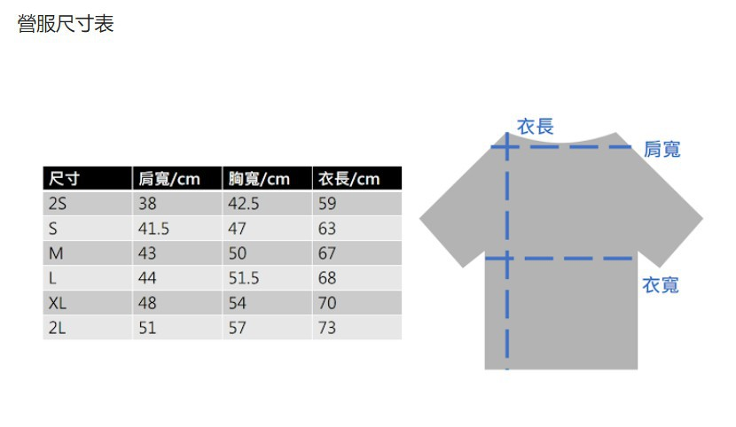

<!圖>
    <br/>
    <b>營服尺寸</b> 
    <select name="size">
        <option value="2S">2S</option>
        <option value="S">S</option>
        <option value="M">M</option>
        <option value="L">L</option>
        <option value="XL">XL</option>
        <option value="2L">2L</option>
    </select><br/><br/>

    <input type="radio">葷食
    &emsp;<input type="radio">素食<br/><br/>
    特殊飲食習慣<input type="text"><br/><br/>
    特殊疾病<input type="text"><br/><br/>
    如何前來營隊？<input type="radio">搭乘火車/高鐵/捷運至新左營高鐵站&emsp;
                <input type="radio">自行前往高雄大學<br/><br/>
    營隊結束後回家方式？<input type="radio">至新左營高鐵站坐車&emsp;
                     <input type="radio">自行從高雄大學回家<br/><br/>
    您最初是如何得知本營隊之訊息(可複選)
    <select name="得知資訊" multiple>
        <option>樂學camp營隊網</option>
        <option>PickCamp大學營隊資訊平台</option>
        <option>第8屆高大資管營Facebook粉絲專頁</option>
        <option>第8屆高大資管營網站</option>
        <option>大學營隊一覽表-教育部國民及學前教育署</option>
        <option>大學生營隊資訊-輔導室</option>
        <option>校園宣傳</option>
        <option>宣傳海報</option>
        <option>親友介紹</option>
        &emsp;&emsp;<input type="text" placeholder="其他">
    </select><br/><br/>

    是否全程參與營隊？<input type="radio">是
            &emsp;<input type="radio">否<br/><br/>
    若無法全程參加營隊，原因為何？<input type="text"><br/><br/>
    自我介紹及營隊期許（字數不限）<textarea cols="30" rows="5"></textarea><br/><br/>
    備註<textarea cols="30" rows="5"></textarea><br/><br/>

    若有問題請私訊<a href="https://www.facebook.com/nukimcamp">高大資管營粉專</a><br/><br/>
    <input type="reset" value="重新輸入">
    <input type="submit" value="確定送出"><br/>